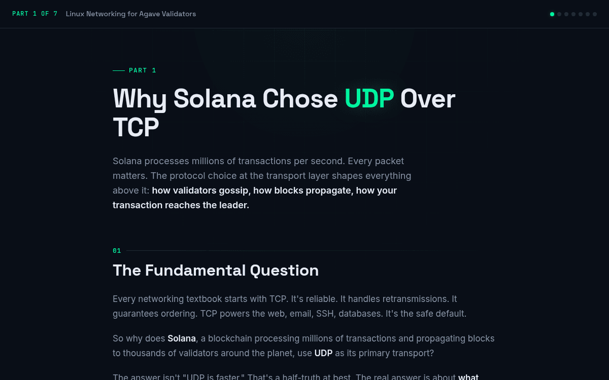
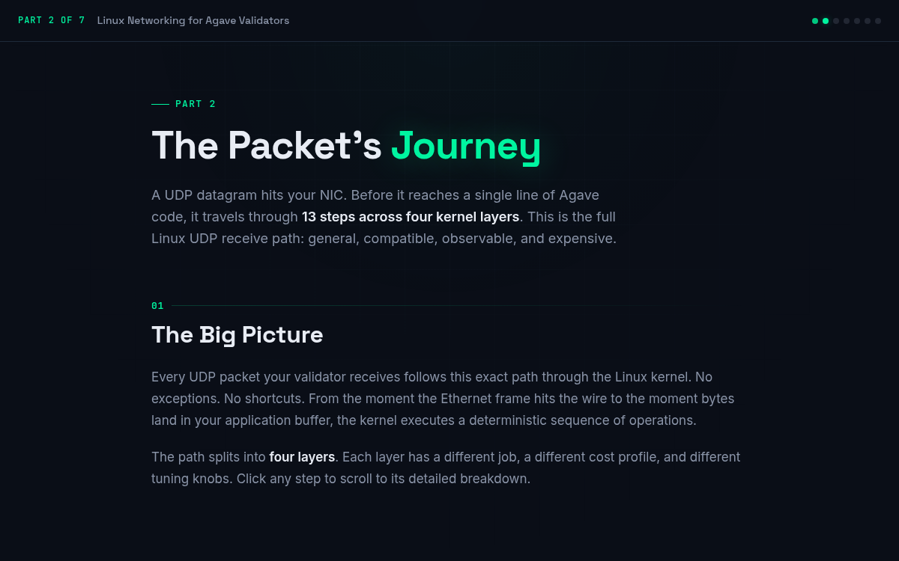
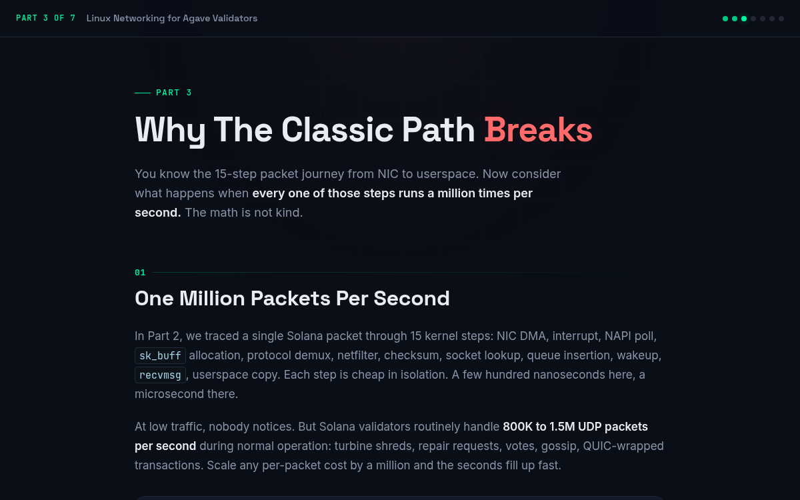
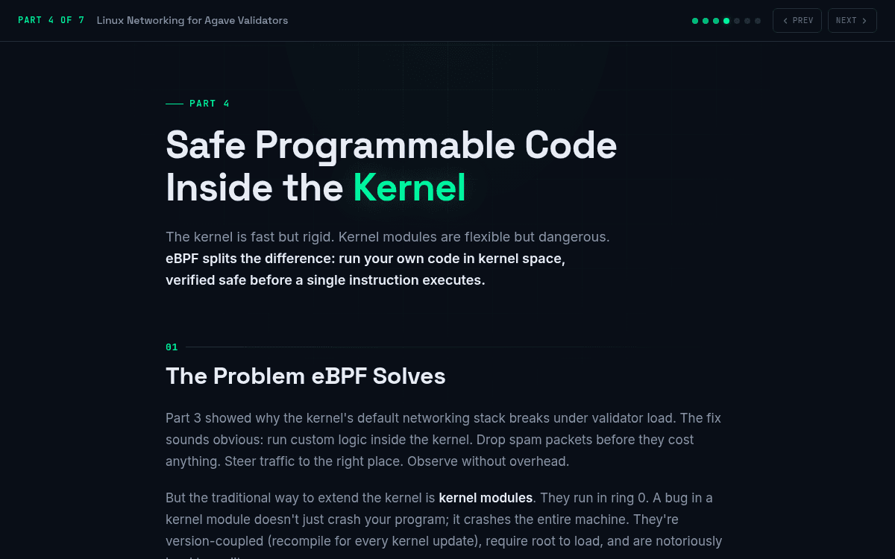
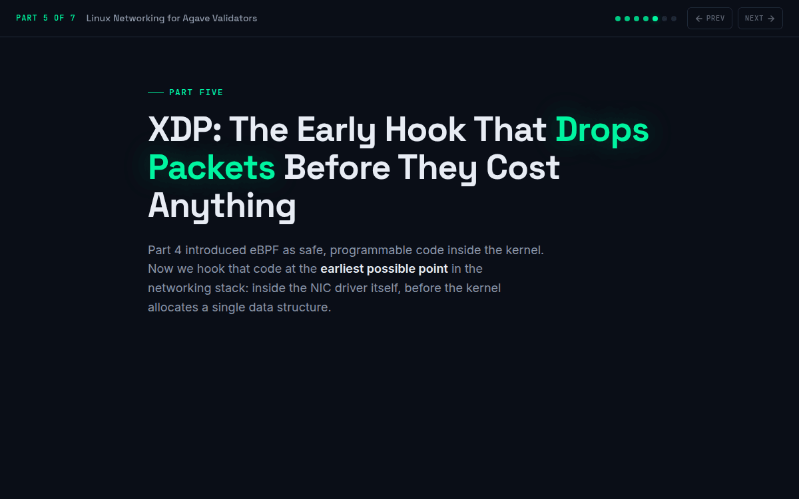
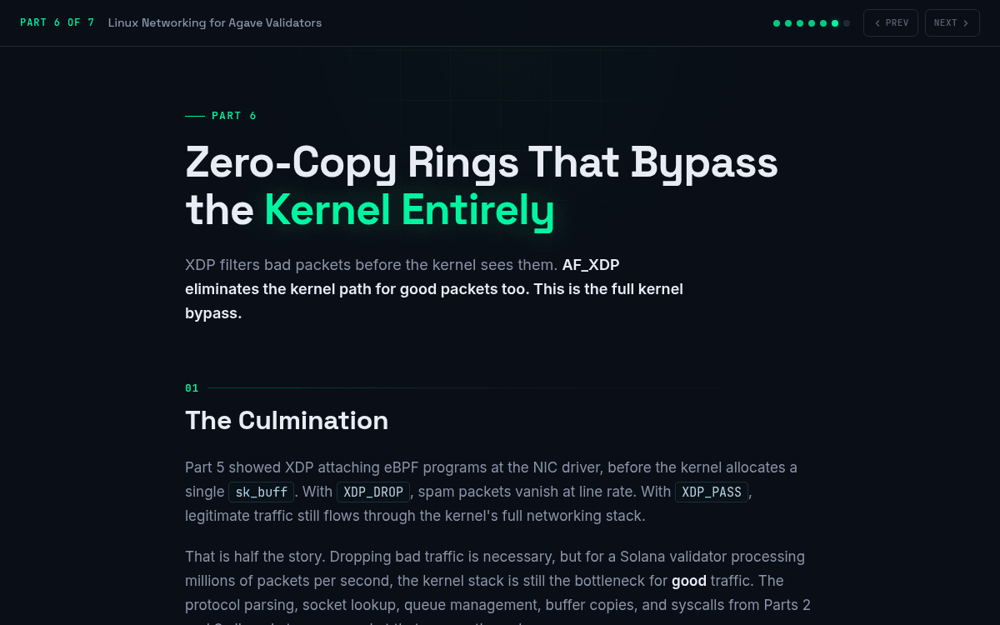
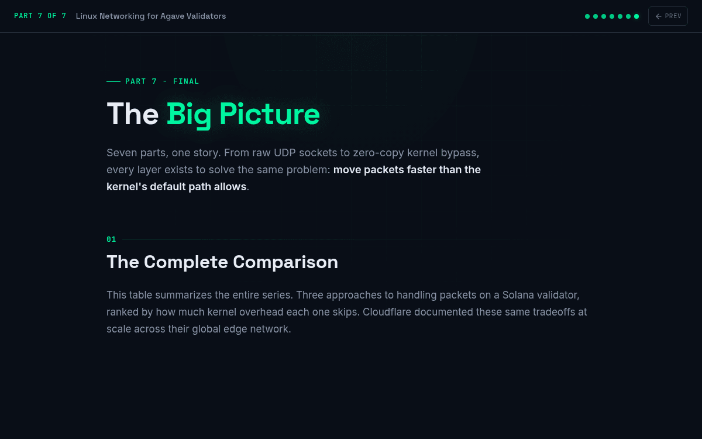
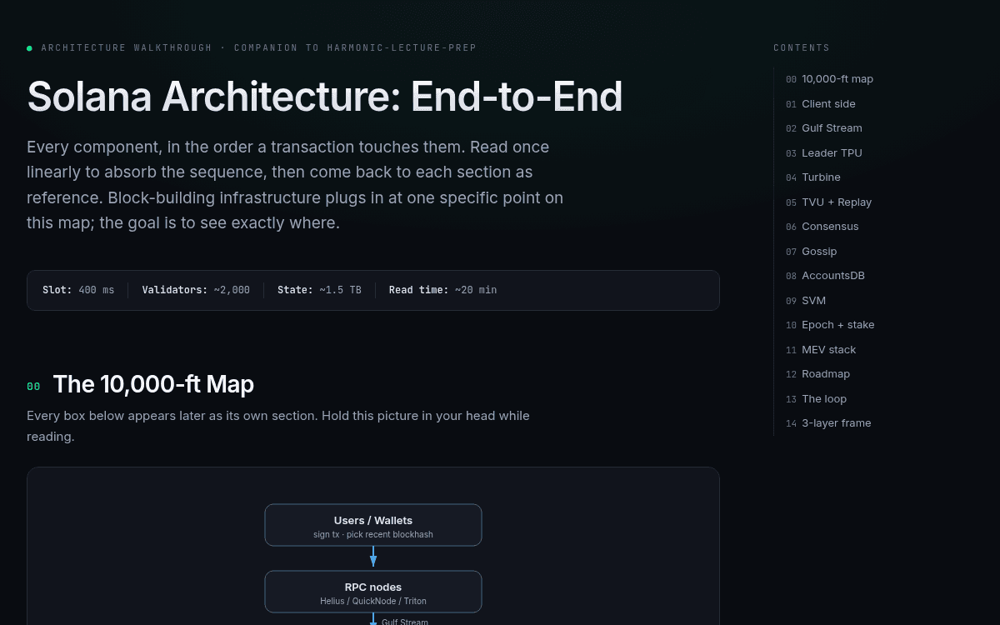
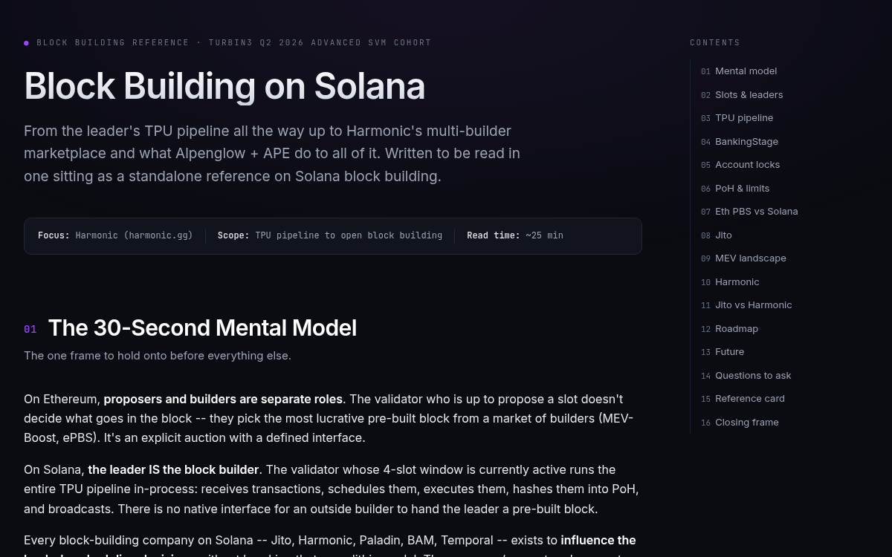

Field Notes on
Solana Internals
Long-form, diagram-heavy deep dives into how Solana works below the API line: validator networking, block building, MEV, and the protocol roadmap. Each note is a self-contained page, no build step, written to be read in one sitting.
Linux Networking for Agave
7 notesWhat happens to a packet before it ever reaches validator code.

Why Solana Chose UDP Over TCP
Understanding why Solana uses UDP instead of TCP for validator networking.

The Packet's Journey
Trace a UDP packet through the full Linux kernel receive path, from NIC to userspace.

Why The Classic Path Breaks at Validator Scale
Quantifying the six CPU cost centers that make the classic Linux kernel packet path collapse at 1M packets per second.

eBPF
eBPF -- safe programmable code inside the kernel. How Linux's in-kernel virtual machine parallels Solana's SBF.

XDP
XDP -- the early hook that drops packets before they cost anything. eXpress Data Path runs inside the NIC driver, before sk_buff allocation.

AF_XDP
AF_XDP zero-copy rings that bypass the kernel entirely. Shared memory, lock-free SPSC rings, and how Agave uses selective kernel bypass.

The Big Picture
Classic vs XDP vs AF_XDP, Agave in practice, Firedancer's full bypass, and the story arc of the entire series.
Block Building on Solana
2 notesHow a block actually gets built, and where MEV infrastructure plugs in.

Architecture Walkthrough
End-to-end walkthrough of Solana's architecture, from a user transaction to rooted finality, in 77 steps with inline diagrams.

Block Building and Harmonic
How Solana blocks get built, where MEV infrastructure plugs into the leader's TPU pipeline, and Harmonic's open multi-builder marketplace.
Banking Stage Jitter
1 noteWhat the W1 jitter lab measures against Alpenglow's latency budget, from zero.
Kernel Bypass: pshred Ingress
1 noteReceiving packets at wire speed with XDP and AF_XDP, wired into Solana ingestion.
QUIC and Constellation
1 noteTransport for proposers, and erasure coding for censorship resistance.